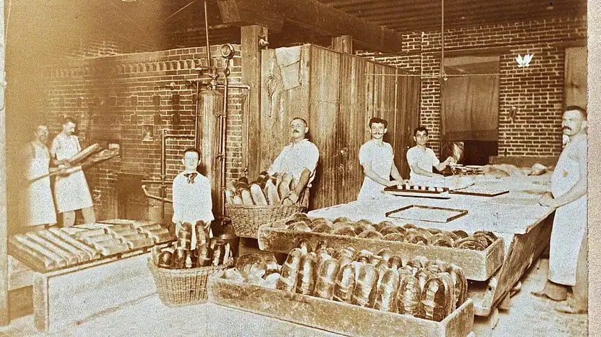

Elena Marsh
Head baker & founderKeeps the levain alive, the ovens honest and the 5 AM playlist unbearable.


Stackly started as a two-person bakery on Harper Lane. The team is bigger now, but the levain is the same one we kept alive in our first winter.


We mill nothing we cannot trace, we prove nothing for less than a day, and we would rather sell out at four than bake again at four. That single rule shaped everything else.
A single deck oven, three breads and a queue that reached the bus stop by eight.
Croissants, éclairs and tarts joined the board after a year of testing laminated dough.
Our pastry chef started building tiered cakes for weddings across the Riverside Quarter.
Two hundred households now get a standing weekly loaf, delivered before breakfast.
You can now reserve a loaf or a tiered cake from the website — the baking has not changed a bit.
Printed, framed and slightly flour-dusted above the mixing bench.
Nothing leaves the bench before it is ready, whatever the clock says.
Flour, water, salt, butter, eggs. If a label needs a dictionary, we pass.
Three farms, one mill and a coffee roaster we can drive to in an hour.
Whatever is left at closing goes to the shelter on Rivers Street. Every day.
Keeps the levain alive, the ovens honest and the 5 AM playlist unbearable.
Trained in Vienna, laminates everything twice, refuses to over-whip cream.
Knows every regular by name and can tell you exactly which loaf is left.
14 Harper Lane, Riverside Quarter. The coffee is on and the first tray lands at 7:05.